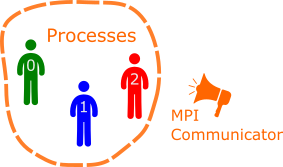

an MPI program is executed with mpiexec -n N [options] nameOfProgram [args]
MPI programs call methods from the mpi library
int MPI_Bcast(void *buffer, int count, MPI_Datatype datatype, int root,
MPI_Comm comm)(g++|icc) -> mpiCC#include <mpi.h>
#include <iostream>
int main(int argc, char * argv[]) {
/// Must be first call
MPI_Init (&argc, &argv);
/// Now MPI calls possible
/// Size of communicator and process rank
int rank, size;
MPI_Comm_rank (MPI_COMM_WORLD, &rank);
MPI_Comm_size (MPI_COMM_WORLD, &size);
std::cout << "Processor " << rank << " of " << size << " says hello\n";
/// Must be last MPI call
MPI_Finalize();
/// No more MPI calls from here
return 0;
}find_package(MPI REQUIRED)
add_executable(hello hello.cc)
target_include_directories(hello SYSTEM PUBLIC ${MPI_INCLUDE_DIRS})
target_link_libraries(hello PUBLIC ${MPI_LIBRARIES})On aristotle.rc.ucl.ac.uk:
module load GCC/4.7.2 OpenMPI/1.6.4-GCC-4.7.2 module load cmake/2.8.10.2mkdir build && cd buildcmake .. && makempiexec -n 4 helloMPI_Init and MPI_FinalizeGroups of processes are handled by a communicator. MPI_COMM_WORLD handles the group of all processes. 
By convention, process of rank 0 is special and called root
Running MPI unit-tests requires MPI_Init and MPI_Finalize before and after the test framework (not inside the tests).
#include <mpi.h>
// Next line tells CATCH we will use our own main function
#define CATCH_CONFIG_RUNNER
#include "catch.hpp"
TEST_CASE("Just test I exist") {
int rank, size;
MPI_Comm_rank (MPI_COMM_WORLD, &rank);
MPI_Comm_size (MPI_COMM_WORLD, &size);
CHECK(size > 0); CHECK(rank >= 0);
}
int main(int argc, char * argv[]) {
MPI_Init (&argc, &argv);
int result = Catch::Session().run(argc, argv);
MPI_Finalize();
return result;
}